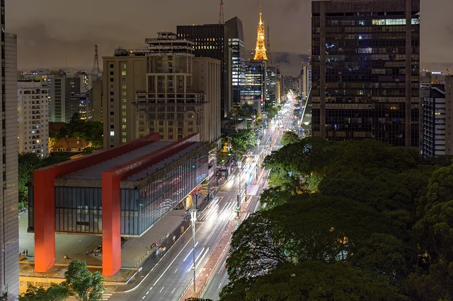
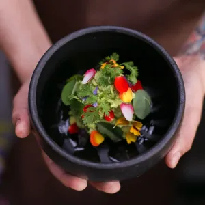
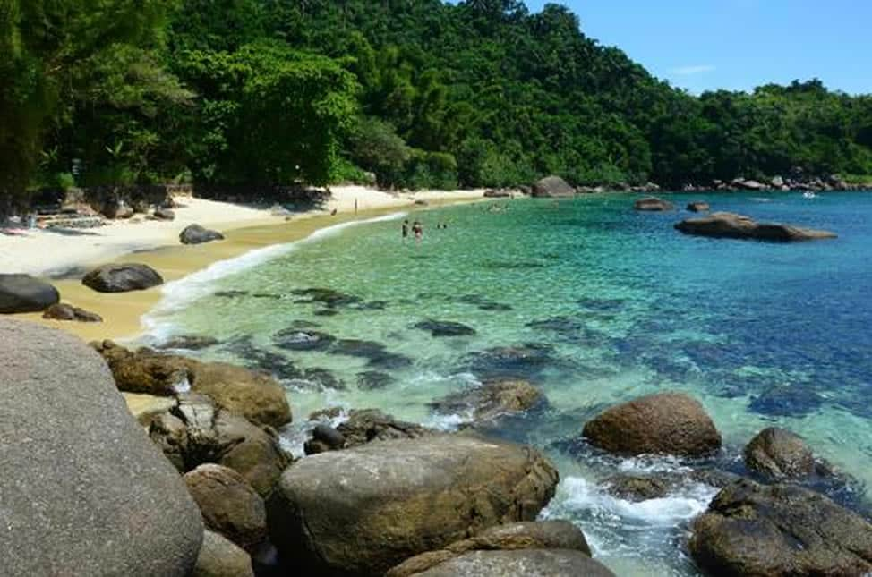

Curiosidades da cidade
Avenida mais famosa de Sampa
Em 1927, após a morte de Carlos de Campos, então governador de São Paulo, o endereço foi renomeado em sua homenagem. Os paulistanos não gostaram nem um pouco da mudança e logo depois, no início da década de 1930, o local recebeu novamente seu nome original: Avenida Paulista.Com 67 prédios comerciais, a Avenida Paulista é considerada o coração financeiro do Brasil.
Gastronomia
A típica comida de São Paulo tem suas raízes na mistura das influências dos índios, portugueses e africanos. Depois, principalmente do final do século 19 para frente, o caldeirão paulista foi ganhando e se apropriando de ingredientes e pratos trazidos pelos diversos imigrantes que foram se fixando por aqui.São Paulo reúne os melhores restaurantes da América Latina e do mundo.
Litoral Paulista
Pode não parecer, ou ganhar tanta a atenção que merece, mas é verdade que o Estado de São Paulo possui belas praias e pedaços do paraíso, muitas vezes escondidos, mas que estão lá.Com águas claríssimas em tons de verde e azuis e propícias para o mergulho, nesta praia você vai encontrar muitos surfistas e quem pratica o windsurf. Mas também muito sossego e paz, já que é bem isolada.